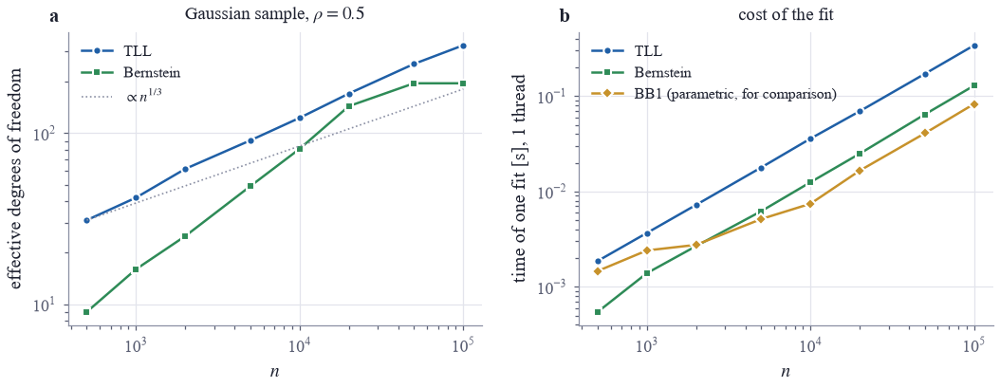
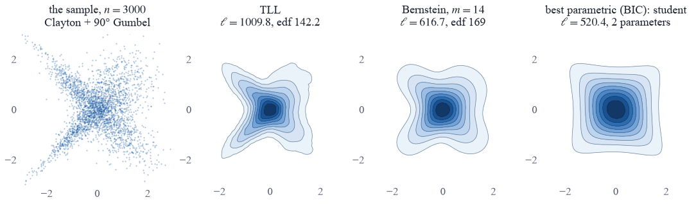

Nonparametric pair copulas¶
Two families are not described by a parameter vector but by an estimate of the copula density
itself: the transformation local-likelihood estimator FV_TLL (code 24) and the empirical
Bernstein copula FV_BERNSTEIN (code 25). They are useful when no parametric family fits a
pair (multimodal dependence, mixtures, dependence that changes sign), and as a benchmark for
the parametric choice. Their mathematical background is on the
family page; this page covers how fortvine estimates, stores
and uses them.
Using them¶
In selection they are candidates like any other family, but they are not in the default
family set: use ctl%nfam = FV_NCLASSIC (codes 0 to 25) or list them in family_set
(Python: the groups "nonparametric" or "all"; R: "nonparametric" or the codes 0:25). Their
penalty in AIC/BIC/mBIC is the effective number of parameters.
Both families ignore rotation (an estimate already has whatever orientation the data have)
and par (always 0).
The aux vector¶
The estimate lives in aux, a vector of length NAUX = 933:
| entries | TLL | Bernstein |
|---|---|---|
aux(1) |
24 | 25 |
aux(2) |
effective degrees of freedom | \((m-1)^2\) |
aux(3) |
grid size, 30 | order \(m\) (\(1 \le m \le 15\)) |
aux(4:33) |
grid points \(g_1 = 0 < \dots < g_{30} = 1\) on the \(u\) scale | cell weights \(W_{ij}\), aux(3 + i + (j-1)*m), \(m^2\) values |
aux(34:933) |
copula density at the \(30 \times 30\) grid nodes, aux(33 + i + (j-1)*30) = \(c(g_i, g_j)\) |
unused |
fv_bicop%fit and select allocate aux with NAUX entries for these families (and with one
entry otherwise). In a vine, vc%aux has first extent NAUX whenever the family set of the
last select contained code 24 or 25, and vc%aux(:, e, t) is the estimate of edge
\((e, t)\). Python (Bicop.aux; aux[t, e] of a Vinecop, indexed from 0) and R ($aux of a
bicop_dist) hold the same vector.
TLL: transformation local likelihood¶
The TLL estimator (Geenens, Charpentier & Paindaveine 2017) estimates the density of the normal scores and maps it back to the copula scale. fortvine implements the local-constant variant of vinecopulib on a \(30 \times 30\) grid:
- Normal scores. \(z_{ik} = \Phi^{-1}\big(R_{ik}/(n+1)\big)\) from the ranks \(R_{ik}\) of each margin.
- Bandwidth. A Gaussian kernel with bandwidth matrix \(B = n^{-1/3}\, s \begin{pmatrix} 1 & r \\ r & 1 \end{pmatrix}\), where \(r\) is the correlation of the normal scores (clipped to \(\pm 0.95\)) and \(s = (\lvert r\rvert / \lvert\rho_{\text{ACE}}\rvert)^{\rho_{\text{ACE}}/2}\) shrinks the bandwidth when the maximal correlation \(\rho_{\text{ACE}}\) from the ACE algorithm (Breiman & Friedman 1985) exceeds the linear one, that is, when the dependence is non-linear.
- Kernel density \(\hat f\) of \((z_1, z_2)\) on a \(30 \times 30\) grid of normal-score nodes equally spaced in \([-3.25, 3.25]\) (the outer nodes are mapped to \(u = 0\) and \(u = 1\)).
- Back-transform. \(\hat c(\Phi(z_1), \Phi(z_2)) = \hat f(z_1, z_2) / (\varphi(z_1)\varphi(z_2))\) at the nodes, followed by three rounds of rescaling rows and columns so that both margins of the interpolated density integrate to one.
Evaluation. The density is bilinear between the nodes. The h-functions integrate the interpolated density along the free variable (with a floor of \(10^{-4}\) and normalisation to total mass one); because the integrand is piecewise linear, the integral is piecewise quadratic and its inverse is solved in closed form in each cell. The CDF is the exact double integral of the interpolant.
Effective degrees of freedom. The influence of an observation on its own fitted value,
\(K(0)\,\det(B)^{-1/2} / (n \hat f(z_i))\) with \(K\) the standard bivariate normal kernel, is
interpolated from the grid and summed over the observations (weighted if weights are given).
The result, at least 1, is aux(2).
Bernstein copula¶
The empirical Bernstein copula (Sancetta & Satchell 2004) of order \(m\) has density
where \(W\) holds the fraction of observations in each of the \(m \times m\) cells of the unit square. To make \(c\) a proper copula density, every row and column of \(W\) must sum to \(1/m\); fortvine enforces that with 50 alternating row/column rescalings (Sinkhorn balancing), starting from the cell counts plus a tiny constant. The order is selected by AIC among \(m = 1, \dots, 15\), with \((m-1)^2\) parameters and the restriction \((m-1)^2 < n/4\); \(m = 1\) is the independence copula.
h-functions are sums of the same form with binomial tail probabilities and are exact; their inverses use a bracketed Newton iteration with the density as derivative.
Weights and discrete margins¶
Both estimators accept observation weights: weighted kernel sums and weighted ACE for TLL, weighted cell counts for Bernstein. With discrete margins (in a vine) the estimate is computed from the mid-points \((F(x) + F(x^-))/2\) of the discrete margins, and its log-likelihood is then evaluated with the exact discrete formulas, see Discrete data.
Cost¶
Measured with one thread on Gaussian(0.5) samples (fit only, the time of BB1 for
comparison):
| \(n\) | TLL fit | TLL edf | Bernstein fit | Bernstein edf | BB1 fit |
|---|---|---|---|---|---|
| 1 000 | 0.004 s | 58 | 0.001 s | 25 | 0.003 s |
| 10 000 | 0.041 s | 136 | 0.014 s | 81 | 0.008 s |
| 100 000 | 0.40 s | 344 | 0.18 s | 196 | 0.086 s |
TLL cost is linear in \(n\) (900 kernel sums with a cut-off at \(e^{-40}\) per term); Bernstein fits all orders up to the AIC optimum. Evaluating TLL costs one bilinear interpolation for the density and a 30-node integration for an h-function; Bernstein costs \(O(m^2)\) per point. In vine selection the nonparametric candidates are scheduled among the first of the slow jobs.
Degrees of freedom are large
The effective degrees of freedom grow with \(n\) (roughly like \(n^{1/3}\) for TLL), so BIC rarely selects a nonparametric family when a reasonable parametric one exists; AIC or the log-likelihood criterion do so more readily. That is the intended trade-off, but compare the numbers above before relying on BIC to choose between the two worlds.

Example¶
An equal mixture of a Clayton copula and a 90-degree rotated Gumbel copula, a shape no single parametric family can represent:
program np_demo
use fortvine_api
implicit none
integer, parameter :: dp = kind(1.0d0), n = 3000
type(fv_bicop) :: a, b, tll, bern, best
type(fv_controls) :: ctl
real(dp) :: u1(n), u2(n), w(n), v(n), pick(n), d3(3)
integer :: i
! an equal mixture of a Clayton and a 90-degree Gumbel: no parametric family fits it
a%family = FV_CLAYTON; a%par(1) = 4.0_dp
b%family = FV_GUMBEL; b%rotation = 90; b%par(1) = 3.0_dp
call random_seed(put=[(5 * i, i = 1, 33)])
call random_number(u1); call random_number(w); call random_number(pick)
call a%hinv1(u1, w, u2); call b%hinv1(u1, w, v)
where (pick > 0.5_dp) u2 = v
tll%family = FV_TLL; call tll%fit(u1, u2)
bern%family = FV_BERNSTEIN; call bern%fit(u1, u2)
print '(a,f9.2,a,f7.2,a,i0)', 'tll: loglik', tll%loglik, ' edf ', tll%npars_eff(), ' aux size ', size(tll%aux)
print '(a,f9.2,a,f7.2,a,i0)', 'bernstein: loglik', bern%loglik, ' edf ', bern%npars_eff(), ' order m = ', nint(bern%aux(3))
call tll%pdf([0.1_dp, 0.5_dp, 0.9_dp], [0.1_dp, 0.5_dp, 0.1_dp], d3)
print '(a,3f8.3)', 'tll density at (0.1,0.1), (0.5,0.5), (0.9,0.1):', d3
call best%select(u1, u2) ! parametric families only (default)
print '(3a,f9.2)', 'best parametric: ', trim(fv_fam_name(best%family)), ' loglik', best%loglik
ctl%nfam = FV_NCLASSIC ! + tev, tll, bernstein
call best%select(u1, u2, ctl)
print '(3a,f9.2)', 'BIC, with nonparametric: ', trim(fv_fam_name(best%family)), ' loglik', best%loglik
ctl%selcrit = FV_AIC
call best%select(u1, u2, ctl)
print '(3a,f9.2)', 'AIC, with nonparametric: ', trim(fv_fam_name(best%family)), ' loglik', best%loglik
end program np_demo
import numpy as np
import fortvine as fv
n = 3000
# an equal mixture of a Clayton and a 90-degree Gumbel: no parametric family fits it
rng = np.random.default_rng(5)
u1, w, pick = rng.random(n), rng.random(n), rng.random(n)
a = fv.Bicop("clayton", 0, [4.0]).hinv1(np.column_stack([u1, w]))
b = fv.Bicop("gumbel", 90, [3.0]).hinv1(np.column_stack([u1, w]))
u = np.column_stack([u1, np.where(pick > 0.5, b, a)])
tll = fv.Bicop("tll").fit(u)
bern = fv.Bicop("bernstein").fit(u)
print(f"tll: loglik{tll.loglik():9.2f} edf {tll.npars:7.2f} aux size {tll.aux.size}")
print(f"bernstein: loglik{bern.loglik():9.2f} edf {bern.npars:7.2f} order m = {round(bern.aux[2])}")
d3 = tll.pdf(np.array([[0.1, 0.1], [0.5, 0.5], [0.9, 0.1]]))
print("tll density at (0.1,0.1), (0.5,0.5), (0.9,0.1):" + "".join(f"{x:8.3f}" for x in d3))
best = fv.Bicop().select(u) # parametric families only (default)
print(f"best parametric: {best.family} loglik{best.loglik():9.2f}")
best = fv.Bicop().select(u, family_set="all") # + tev, tll, bernstein
print(f"BIC, with nonparametric: {best.family} loglik{best.loglik():9.2f}")
best = fv.Bicop().select(u, family_set="all", criterion="aic")
print(f"AIC, with nonparametric: {best.family} loglik{best.loglik():9.2f}")
library(fortvine)
n <- 3000
# an equal mixture of a Clayton and a 90-degree Gumbel: no parametric family fits it
set.seed(5)
u1 <- runif(n); w <- runif(n); pick <- runif(n)
a <- hbicop(cbind(u1, w), 1, bicop_dist("clayton", 0, 4), inverse = TRUE)
b <- hbicop(cbind(u1, w), 1, bicop_dist("gumbel", 90, 3), inverse = TRUE)
u <- cbind(u1, ifelse(pick > 0.5, b, a))
tll <- bicop(u, family_set = "tll")
bern <- bicop(u, family_set = "bernstein")
cat(sprintf("tll: loglik%9.2f edf %7.2f aux size %d\n", tll$loglik, tll$npars, length(tll$aux)))
cat(sprintf("bernstein: loglik%9.2f edf %7.2f order m = %d\n", bern$loglik, bern$npars,
round(bern$aux[3])))
d3 <- dbicop(rbind(c(0.1, 0.1), c(0.5, 0.5), c(0.9, 0.1)), tll)
cat("tll density at (0.1,0.1), (0.5,0.5), (0.9,0.1):", sprintf("%8.3f", d3), "\n", sep = "")
best <- bicop(u) # parametric families only (default)
cat(sprintf("best parametric: %s loglik%9.2f\n", best$family, best$loglik))
best <- bicop(u, family_set = 0:25) # + tev, tll, bernstein
cat(sprintf("BIC, with nonparametric: %s loglik%9.2f\n", best$family, best$loglik))
best <- bicop(u, family_set = 0:25, selcrit = "aic")
cat(sprintf("AIC, with nonparametric: %s loglik%9.2f\n", best$family, best$loglik))
Output:
TLL doubles the log-likelihood of the best parametric fit, but with 185 effective parameters; BIC (\(\tfrac12 \log 3000 \approx 4.0\) per parameter) still prefers the Student copula, AIC (1 per parameter) prefers TLL. The three languages draw different samples, and the BIC choice is close: on the Python sample TLL gains 496 log-likelihood units for 124 extra effective parameters, just above their BIC penalty of 495, so BIC takes TLL there.
